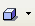
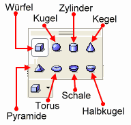
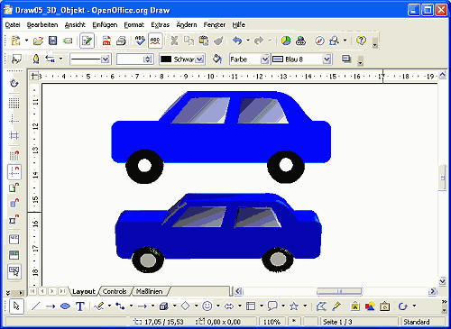
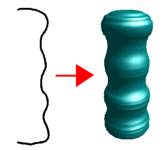
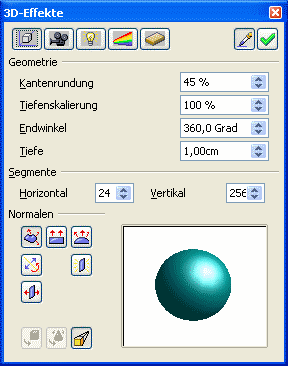
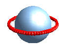

| [zurück] | [Hauptmenü] | [weiter] |
Erstellen eines einfachen 3D-Objektes
Draw bietet 2 Möglichkeiten 3D-Objekte zu erstellen:
- über die Symbolleiste "Zeichnen" und dort das Symbol "3D-Objekte" 
- über das Markieren eines Zeichnungsobjektes oder einer Gruppe von Objekten und das Kontext-Menü Umwandeln... > "In 3D-Objekt" oder "In 3D-Rotationskörper"
Erstellen eines 3D-Objektes
Um ein 3D-Objekt erstellen zu können muss das Icon für 3D-Objekte in der Symbolleiste Zeichnen eingeblendet sein. Wenn Sie das Icon nicht sehen, klicken Sie auf den kleinen Pfeil an der rechten Seite der Symbolleiste und wählen "Sichtbare Schaltflächen" und klicken "3D-Objekte" an.
Eine andere Möglichkeit ist die Symbolleiste über Ansicht > Symbolleisten > 3D-Objekte anzeigen zu lassen.
Die 3D-Zeichenwerkzeuge
 Abbildung 1: die 3D-Zeichenwerkzeuge
- Würfel
- Kugel
- Zylinder
- Kegel
- Pyramide
- Torus
- Schale
- Halbkugel
Einen 3D-Würfel erstellen Sie mit der gehaltenen linken Maustaste im Arbeitsblatt. Mit gehaltener Umschalt-Taste wird daraus ein 3D-Rechteck.
Umwandeln in ein 3D-Objekt
Sie können ein einfaches oder komplexes Zeichenobjekt erstellen und dieses dann anschließend in ein 3D-Objekt umwandeln.
Abbildung 2: Ein einfaches Auto vor und nach der Umwandlung in ein 3D-Objekt
Umwandeln in ein 3D-Rotationskörper
Eine sehr interessante Variante um eigene zylindrische 3D-Objekte zu erstellen. Der Rotationskörper entsteht durch ein um die eigene Längsachse rotierendes Objekt. Ein kleines Beispiel:
Abbildung 3: Ein Zeichenobjekt vor und nach der Umwandlung in einen 3D-Rotationskörper
3D-Effekte
Das Erscheinungsbild der 3D-Objekte kann noch über das Kontextmenü 3D-Effekte eingestellt werden, welches Sie bei markiertem Objekt über einen Klick mit der rechten Maustaste erreichen können.
Abbildung 4: Einstellungsdialog für 3D-Effekte
Über die Schaltflächen "Geometrie", "Darstellung", "Beleuchtung", "Texturen" und "Material" können verschiedene Eigenschaften bearbeitet und vor Übernahme auf das Objekt anhand einer Vorschaugrafik begutachtet werden.
Zusammensetzen von 3D-Objekten
Interessante 3D-Objekte können Sie erstellen, indem Sie mehrere davon kombinieren.
Abbildung 5: 2 kombinierte 3D-Objekte
Um dieses Beispiel zu erstellen, müssen Sie folgende Bearbeitungsschritte machen:
- Erstellen einer 3D-Kugel
- Erstellen eines ungefüllten Kreises mit rotem Strich in einer Stärke von 0,20 cm
- Auf den markierten Kreis klicken Sie rechts und wählen Umwandeln > "In 3D"
- Auf den rechteckigen 3D-Ring klicken Sie rechts und wählen "3D-Effekte"
- Stellen Sie die Kantenrundung auf "100%" und die Tiefe auf "0,20 cm". Klicken Sie nun auf den grünen Haken oben rechts, damit die Attribute auf den Ring angewendet werden, und schließen Sie das Fenster
- Klicken Sie auf den Ring, grüne "Anfasser"-Punkte erscheinen. Klicken Sie ein weiteres Mal, sodass die Anfasser rot werden.
- Klicken Sie auf den Anfasser der rechten Seite und bewegen Sie die Maus bei gehaltener linken Maustaste nach oben. Der Ring wird im Raum gekippt.
- Nun wählen Sie Menü Bearbeiten > Ausschneiden
- Klicken Sie auf die Kugel mit der rechten Maustaste und wählen Sie im Kontextmenü "Gruppierung betreten"
- Wählen Sie Menü Bearbeiten > Einfügen
- Nun wurde der Ring in die Gruppierung der Kugel eingefügt
- Ziehen Sie nun den Ring über die Kugel und doppelklicken Sie auf eine freie Stelle im Arbeitsblatt, um die Gruppierung wieder zu verlassen.